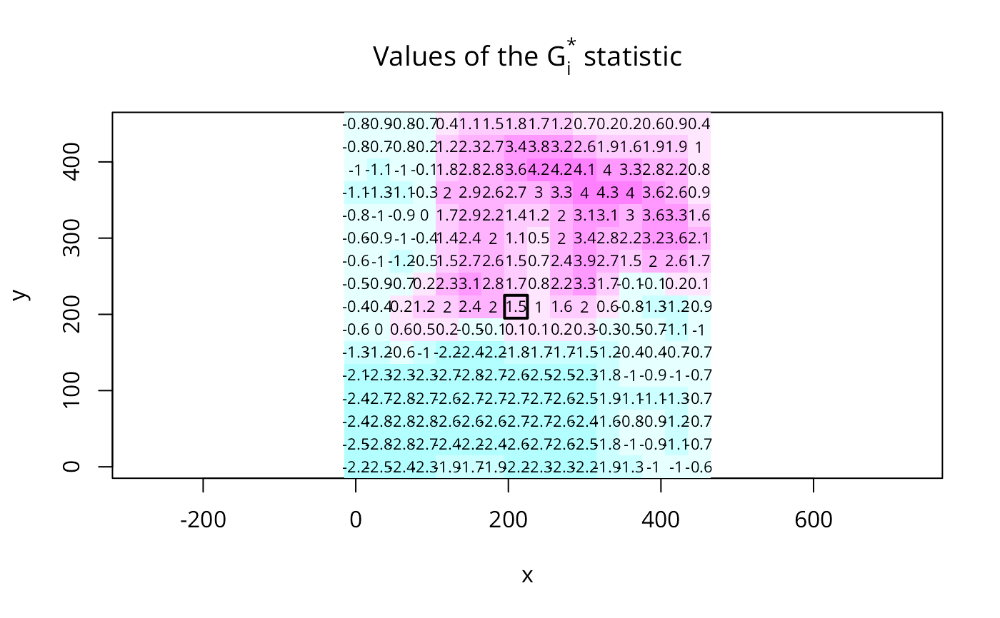
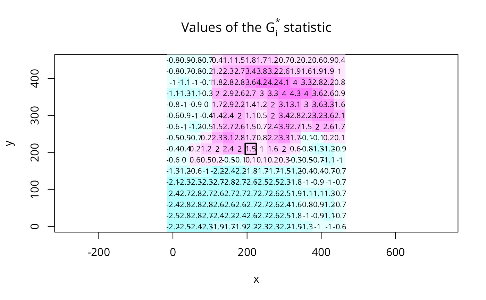

G and Gstar local spatial statistics
localG.RdThe local spatial statistic G is calculated for each zone based on the spatial weights object used. The value returned is a Z-value, and may be used as a diagnostic tool. High positive values indicate the posibility of a local cluster of high values of the variable being analysed, very low relative values a similar cluster of low values. For inference, a Bonferroni-type test is suggested in the references, where tables of critical values may be found (see also details below).
Usage
localG(x, listw, zero.policy=attr(listw, "zero.policy"), spChk=NULL, GeoDa=FALSE,
alternative = "two.sided", return_internals=TRUE)
localG_perm(x, listw, nsim=499, zero.policy=attr(listw, "zero.policy"), spChk=NULL,
alternative = "two.sided", iseed=NULL, fix_i_in_Gstar_permutations=TRUE,
no_repeat_in_row=FALSE)Arguments
- x
a numeric vector the same length as the neighbours list in listw
- listw
a
listwobject created for example bynb2listw- zero.policy
default NULL, use global option value; if TRUE assign zero to the lagged value of zones without neighbours, if FALSE assign NA
- spChk
should the data vector names be checked against the spatial objects for identity integrity, TRUE, or FALSE, default NULL to use
get.spChkOption()- GeoDa
default FALSE, if TRUE, drop x values for no-neighbour and self-neighbour only observations from all summations
- nsim
default 499, number of conditonal permutation simulations
- alternative
a character string specifying the alternative hypothesis, must be one of
"two.sided"(default),"greater"or"less".- return_internals
default
TRUE, unused- iseed
default NULL, used to set the seed; the output will only be reproducible if the count of CPU cores across which computation is distributed is the same
- fix_i_in_Gstar_permutations
default
TRUE(fix x at self in permutations for local G-star), setFALSEto use pre-1.2-8 behaviour- no_repeat_in_row
default
FALSE, ifTRUE, sample conditionally in each row without replacements to avoid duplicate values, https://github.com/r-spatial/spdep/issues/124
Details
If the neighbours member of listw has a "self.included" attribute set
to TRUE, the Gstar variant, including the self-weight \(w_{ii} > 0\),
is calculated and returned. The returned vector will have a "gstari"
attribute set to TRUE. Self-weights must be included by using the
include.self function before converting
the neighbour list to a spatial weights list with nb2listw as
shown below in the example.
The critical values of the statistic under assumptions given in the references for the 95th percentile are for n=1: 1.645, n=50: 3.083, n=100: 3.289, n=1000: 3.886.
Value
A vector of G or Gstar standard deviate values, with attributes "gstari" set to TRUE or FALSE, "call" set to the function call, and class "localG". For conditional permutation, the returned value is the same as for localG(), and the simulated standard deviate is returned as column "StdDev.Gi" in attr(., "internals").
Note
Conditional permutations added for comparative purposes; permutations are over the whole data vector omitting the observation itself, and from 1.2-8 fixing the observation itself as its own neighbour for local G-star.
References
Ord, J. K. and Getis, A. 1995 Local spatial autocorrelation statistics: distributional issues and an application. Geographical Analysis, 27, 286–306; Getis, A. and Ord, J. K. 1996 Local spatial statistics: an overview. In P. Longley and M. Batty (eds) Spatial analysis: modelling in a GIS environment (Cambridge: Geoinformation International), 261–277; Bivand RS, Wong DWS 2018 Comparing implementations of global and local indicators of spatial association. TEST, 27(3), 716–748 doi:10.1007/s11749-018-0599-x
Author
Roger Bivand Roger.Bivand@nhh.no
Examples
data(getisord, package="spData")
# spData 0.3.2 changes x, y, xyz object names to go_x, go_y, go_xyz to
# avoid putting these objects into the global environment via lazy loading
if (exists("go_xyz") && packageVersion("spData") >= "0.3.2") {
xyz <- go_xyz
x <- go_x
y <- go_y
}
xycoords <- cbind(xyz$x, xyz$y)
nb30 <- dnearneigh(xycoords, 0, 30)
G30 <- localG(xyz$val, nb2listw(nb30, style="B"))
G30[length(xyz$val)-136]
#> [1] 1.221979
set.seed(1)
G30_sim <- localG_perm(xyz$val, nb2listw(nb30, style="B"))
G30_sim[length(xyz$val)-136]
#> [1] 1.221979
nb60 <- dnearneigh(xycoords, 0, 60)
G60 <- localG(xyz$val, nb2listw(nb60, style="B"))
G60[length(xyz$val)-136]
#> [1] 1.748098
nb90 <- dnearneigh(xycoords, 0, 90)
G90 <- localG(xyz$val, nb2listw(nb90, style="B"))
G90[length(xyz$val)-136]
#> [1] 1.986135
nb120 <- dnearneigh(xycoords, 0, 120)
G120 <- localG(xyz$val, nb2listw(nb120, style="B"))
G120[length(xyz$val)-136]
#> [1] 1.893374
nb150 <- dnearneigh(xycoords, 0, 150)
G150 <- localG(xyz$val, nb2listw(nb150, style="B"))
G150[length(xyz$val)-136]
#> [1] 1.237454
brks <- seq(-5,5,1)
cm.col <- cm.colors(length(brks)-1)
image(x, y, t(matrix(G30, nrow=16, ncol=16, byrow=TRUE)),
breaks=brks, col=cm.col, asp=1)
text(xyz$x, xyz$y, round(G30, digits=1), cex=0.7)
polygon(c(195,225,225,195), c(195,195,225,225), lwd=2)
title(main=expression(paste("Values of the ", G[i], " statistic")))
 G30s <- localG(xyz$val, nb2listw(include.self(nb30),
style="B"))
cat("value according to Getis and Ord's eq. 14.2, p. 263 (1996)\n")
#> value according to Getis and Ord's eq. 14.2, p. 263 (1996)
G30s[length(xyz$val)-136]
#> [1] 1.45078
cat(paste("value given by Getis and Ord (1996), p. 267",
"(division by n-1 rather than n \n in variance)\n"))
#> value given by Getis and Ord (1996), p. 267 (division by n-1 rather than n
#> in variance)
G30s[length(xyz$val)-136] *
(sqrt(sum(scale(xyz$val, scale=FALSE)^2)/length(xyz$val)) /
sqrt(var(xyz$val)))
#> [1] 1.447943
image(x, y, t(matrix(G30s, nrow=16, ncol=16, byrow=TRUE)),
breaks=brks, col=cm.col, asp=1)
text(xyz$x, xyz$y, round(G30s, digits=1), cex=0.7)
polygon(c(195,225,225,195), c(195,195,225,225), lwd=2)
title(main=expression(paste("Values of the ", G[i]^"*", " statistic")))

G30s <- localG(xyz$val, nb2listw(include.self(nb30),
style="B"))
cat("value according to Getis and Ord's eq. 14.2, p. 263 (1996)\n")
#> value according to Getis and Ord's eq. 14.2, p. 263 (1996)
G30s[length(xyz$val)-136]
#> [1] 1.45078
cat(paste("value given by Getis and Ord (1996), p. 267",
"(division by n-1 rather than n \n in variance)\n"))
#> value given by Getis and Ord (1996), p. 267 (division by n-1 rather than n
#> in variance)
G30s[length(xyz$val)-136] *
(sqrt(sum(scale(xyz$val, scale=FALSE)^2)/length(xyz$val)) /
sqrt(var(xyz$val)))
#> [1] 1.447943
image(x, y, t(matrix(G30s, nrow=16, ncol=16, byrow=TRUE)),
breaks=brks, col=cm.col, asp=1)
text(xyz$x, xyz$y, round(G30s, digits=1), cex=0.7)
polygon(c(195,225,225,195), c(195,195,225,225), lwd=2)
title(main=expression(paste("Values of the ", G[i]^"*", " statistic")))
